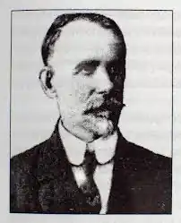

Народився Іван Ілліч Синюк 1 травня 1866 року у прадавньому українському селі Кам'янка.
Початкову освіту І. Синюк здобув у рідному селі, педагогічну — в Чернівцях, закінчивши вчительську семінарію. Близько сорока років працював народним вчителем у різних селах Буковини, залишивши помітний слід на буковинській освітянській ниві.
Творчу діяльність І. Синюк розпочав казкою "Соколець" — 1896р., в 1897 перша збірка, а друга в 1899 р. — "Образки з життя й природи". Опублікував в газеті "Буковина" близько двадцяти оповідань, нарисів, казок, одноактну п'єсу "Мужики" (1902), працював як член видавничого комітету педагогічного двотижневика "Промінь", працював певний час призначену для дітей "Крейцареву бібліотеку" (1902-1908). У 30-х роках вцдав власним коштом п 'єсу "Чесна Вероня" і збірку оповідань та нарисів "Фейлетони". Помер 17 серпня 1953 року. Похований у м. Садгора.